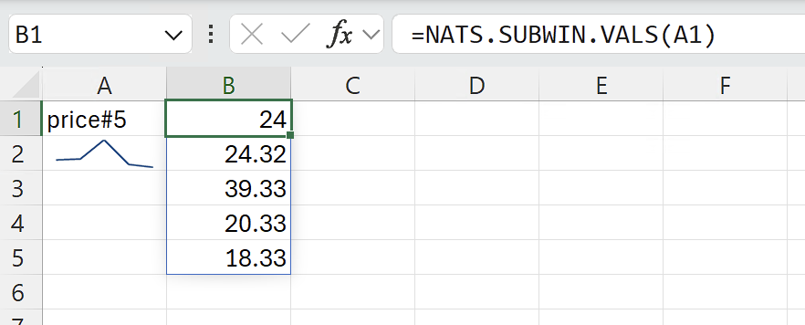
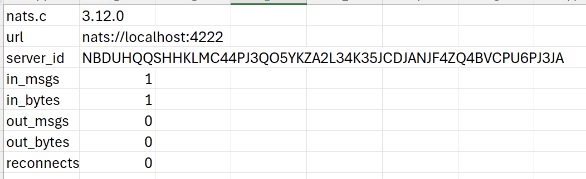
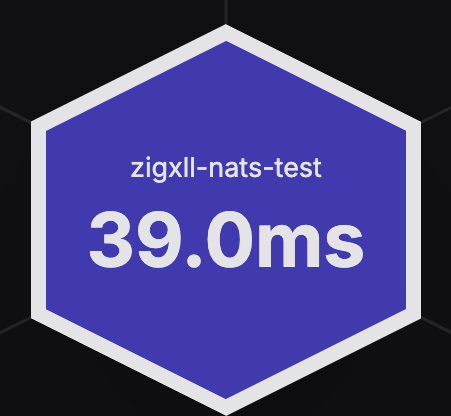

Why
NATS is a lightweight messaging system that acts as a convenient hub for all kinds of real-time data: IoT sensor readings, financial market prices, application metrics, logistics tracking, machine telemetry, and more. This add-in lets you tap into any of that data directly in Excel, with no code, bridging scripts, or CSV exports needed.
Subscribe to live subjects, build formulae over streaming values, create charts and visualisations that update in real time, and publish commands back to NATS from cells. If your data flows through NATS, it can flow into (and out of) Excel.
Features
Single small binary
Around 480 KB .xll file. Just open it in Excel, or install. No .NET framework, no COM setup, no admin rights.
Built on nats.c
The official, battle-tested NATS C client. Supports TLS, NKey, token, and credentials file authentication out of the box.
Subscribe and publish
=NATS.SUB("prices.gbp") to subscribe, =NATS.PUB("cmd", B2) to publish. More capabilities on the way.
Friendly wrapper functions
Custom Excel RTD wrapper functions so users never need raw =RTD(...) syntax.
Windowed subscriptions
=NATS.SUBWIN("subject", 100) accumulates the last N numeric values for rolling aggregates, charts, and sparklines.
Type hints and JSON extraction
=NATS.SUB("ticker.AAPL", "$.price") parses JSON payloads and returns native Excel types, ready for formulae.
Designed for throughput
Arena-allocated refresh cycles, zero per-message allocations on the render path, and lock-free handoff from the nats.c thread pool.
File-based configuration
Simple config.json for server addresses, authentication, TLS, and connection settings.
Getting started
- Download one of the XLL files above (standard or TLS variant).
- You may need to unblock it: Excel is blocking untrusted XLL add-ins.
- Double-click the
.xllfile to load it into Excel. - Ensure a NATS server is running. By default the add-in connects to
127.0.0.1:4222.
Basic usage
=NATS.SUB("my.subject")Or the raw RTD call:
=RTD("zigxll.connectors.nats", , "my.subject")RTD throttle interval
Excel throttles RTD updates via Application.RTD.ThrottleInterval, which defaults to 2000 ms. For higher update rates, lower it in the VBA Immediate Window (Alt+F11, then Ctrl+G):
Application.RTD.ThrottleInterval = 100Set to 0 for the fastest possible updates. This setting persists across sessions.
Excel functions
| Function | Description |
|---|---|
=NATS.SUB("subject") | Subscribe to a NATS subject (RTD wrapper) |
=NATS.SUB("subject", "type") | Subscribe with a type hint (see below) |
=NATS.SUBWIN("subject", n) | Subscribe and accumulate the last N numeric values |
=NATS.SUBWIN.VALS(handle) | Read accumulated values as a spilling column |
=NATS.PUB("subject", "payload") | Publish a message to a NATS subject |
=NATS.INFO() | Connection info and statistics (spills a 2-column matrix) |
Type hints
The optional second argument to NATS.SUB controls how the received payload is interpreted:
| Usage | Behaviour |
|---|---|
=NATS.SUB("prices.BTC") | Auto: duck-types. Tries bool, int, float, falls back to string. |
=NATS.SUB("prices.BTC", "number") | Forces numeric coercion. #VALUE! if not parseable. |
=NATS.SUB("flags.active", "bool") | Forces bool ("true"/"false"). #VALUE! otherwise. |
=NATS.SUB("data.raw", "string") | Always string, no coercion. |
=NATS.SUB("ticker.AAPL", "$.price") | Parses JSON payload, extracts price field, type from JSON. |
=NATS.SUB("ticker.AAPL", "$.quote.last") | Nested dot-path: {"quote":{"last":142.5}} returns 142.5 as double. |
Windowed subscriptions
NATS.SUBWIN subscribes to a NATS subject and accumulates the last N numeric values in a ring buffer, rather than showing only the latest value. It returns a handle string that updates on each new message. NATS.SUBWIN.VALS takes that handle and returns the buffered values as a spilling column.
A1: =NATS.SUBWIN("sensor.temperature", 100)
B1: =NATS.SUBWIN.VALS(A1)A1 displays a handle like sensor.temperature#42 that changes with every new value. B1 spills up to 100 values downward (oldest first), automatically resizing as the buffer fills. Non-numeric messages are silently dropped.
Because NATS.SUBWIN.VALS returns a dynamic array, you can use standard Excel functions directly over the spill range:
C1: =AVERAGE(NATS.SUBWIN.VALS(A1))
C2: =MAX(NATS.SUBWIN.VALS(A1))
C3: =STDEV(NATS.SUBWIN.VALS(A1))You can also select the spill range as a data source for sparklines or charts via the Excel UI, giving you a live-updating plot with no VBA. The maximum window size is 4096.


Reactive publishing
NATS.PUB publishes a message to NATS and displays PUB: <subject> on success. Because it is a regular Excel function, it re-publishes automatically whenever its input cells change, making it reactive.
=NATS.PUB("commands.set-target", B2)When B2 changes, the new value is published to commands.set-target immediately. This makes it straightforward to build two-way Excel/NATS systems: subscribe to live data with NATS.SUB, transform it with formulae, and publish results back with NATS.PUB.
The connection is shared with NATS.SUB. If no RTD subscriptions are active, NATS.PUB establishes the connection lazily on first use. Returns #VALUE! if not connected or publish fails.
Configuration
Connection settings are loaded from a config.json file. The search order is:
- Same directory as the
.xllfile %APPDATA%\zigxll-nats\config.json
If no file is found, defaults are used (nats://127.0.0.1:4222, no auth, no TLS). All fields are optional.
{
"url": "nats://myserver:4222",
"name": "excel-nats"
}NGS / Synadia Cloud
To connect to NGS or any Synadia Cloud deployment, use the TLS variant of the XLL and a .creds file exported from your account:
{
"url": "tls://connect.ngs.global",
"name": "zigxll-nats",
"credentials_file": "C:\\Users\\you\\Desktop\\ngs.creds"
}This also applies to any self-hosted NATS deployment using operator/account JWTs with credentials files.

All options
| Field | Type | Description |
|---|---|---|
url | string | Server URL. Default nats://127.0.0.1:4222 |
servers | string[] | Multiple server URLs for cluster failover (overrides url) |
name | string | Connection name (visible in NATS monitoring) |
user | string | Username for user/password auth |
password | string | Password for user/password auth |
token | string | Auth token |
credentials_file | string | Path to .creds file (JWT + NKey, for NATS NGS / operator mode) |
nkey_public | string | NKey public key (the N... string) |
nkey_seed_file | string | Path to NKey seed file (requires nkey_public) |
tls | bool | Enable TLS (requires OpenSSL for Windows). Default false |
tls_ca_cert | string | Path to CA certificate file |
tls_cert | string | Path to client certificate file |
tls_key | string | Path to client private key file |
tls_skip_verify | bool | Skip server cert verification (dev only). Default false |
connect_timeout_ms | int | Connection timeout in milliseconds |
ping_interval_ms | int | Ping interval in milliseconds |
max_reconnect | int | Max reconnect attempts (-1 for unlimited) |
reconnect_wait_ms | int | Wait between reconnect attempts in milliseconds |
Architecture
The XLL embeds a vendored copy of nats.c, compiled as a static library alongside the Zig source. Messages arrive on the nats.c internal thread pool via a subscription callback, which stores the latest value per topic and notifies Excel to refresh.
Key implementation details
- Arena allocator for UTF-16 string conversions during Excel refresh cycles, reset once per
RefreshDatabatch. Zero malloc/free churn on the hot path. - Null-terminated subject copies when passing Zig slices to the nats.c C API.
- CRT compatibility patches for the Zig XLL build environment.
InitOnceExecuteOnceandatexit()are bypassed as they can deadlock in DLLs built with Zig's CRT stubs.
Built with Zig 0.15.1 using the ZigXLL framework. The target is x86_64-windows-msvc, and the project cross-compiles from macOS or Linux with the help of xwin.
Building from source
Requires Zig 0.15.1 and a checkout of ZigXLL as a sibling directory.
zig buildOutput: zig-out/lib/zigxll-connectors-nats.xll
Cross-compilation (macOS/Linux)
Install xwin to provide the Windows SDK headers and libraries:
# macOS
brew install xwin
xwin --accept-license splat --output ~/.xwin
# Linux
cargo install xwin
xwin --accept-license splat --output ~/.xwin-Dtls=true), as it requires OpenSSL .lib files for the target platform to be available locally. CI builds natively on Windows with TLS enabled.
Roadmap
- JetStream: subscribe to JetStream consumers for durable, replay-capable streams with at-least-once delivery.
- Last value population: populate cells with the most recent value on subscribe, so sheets are not empty until the next publish.
- Debouncing/windowing: reduce unnecessary recalculations, e.g. round to 3 decimal places and only update the cell if the rounded value differs.
- Reconnect status in cells: surface connection state (connected/reconnecting/disconnected) so users can see when the link is down.
Licence
MIT. See LICENCE for details.
This project uses nats.c (Apache 2.0) and ZigXLL (MIT). See NOTICE for attribution.